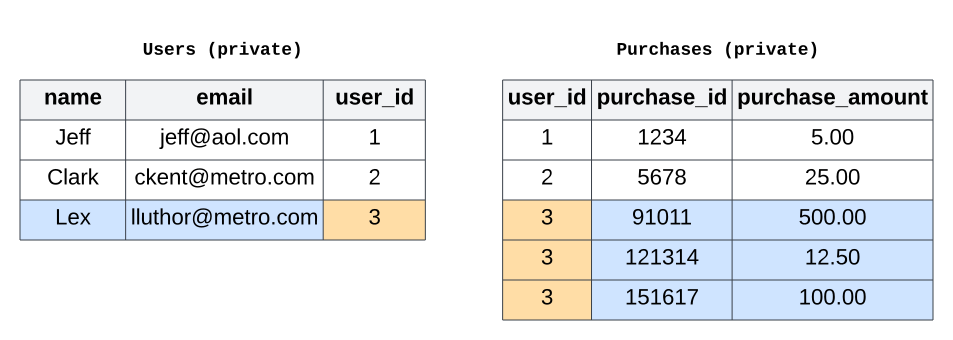
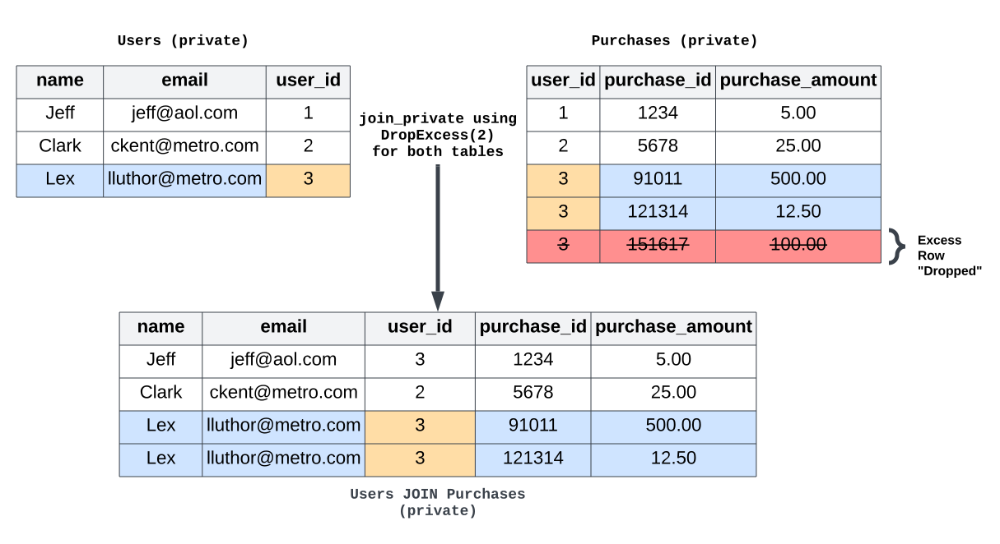

Understanding sensitivity#
This topic guide goes into detail on the concept of sensitivity in differential privacy.
Sensitivity is the maximum impact that a protected change can have on a query’s results. It directly impacts how much noise must be added to achieve differential privacy: the bigger the sensitivity, the more noise needs to be added to the result.
With Tumult Analytics, the type of protected change depends on whether the goal is
to hide a fixed number of rows, using
AddMaxRows, or arbitrarily many
rows sharing the same privacy identifier, using
AddRowsWithID.
A simple example of sensitivity is the explanation of clamping bounds in the third tutorial: larger clamping bounds mean that a single row can have more influence, and more noise needs to be added. However, the sensitivity is not always so straightforward to estimate. In this topic guide, we will examine how different types of inputs and transformations to a query can affect its sensitivity. Understand this relationship will help you choose what transformations to use to ensure accurate results while maintaining strong privacy guarantees.
Queries on tables using AddMaxRows#
Queries on tables using the AddMaxRows or
AddOneRow protected change
protect the addition or removal of rows in the table. This means that any
operation which changes the number of rows requires a corresponding increase to the
protected change. A larger protected change corresponds to a higher sensitivity for a query,
which means more noise needs to be added to the query result. Specifically, sensitivity
scales linearly with the protected change.
A few operations can increase the sensitivity of a query in this way:
flat maps,
public joins, and
private joins.
Flat maps#
A flat_map maps each
input row to zero or more new rows. Consider the example from
Simple transformations tutorial, where each input row is mapped to up
to three new rows, using to the max_rows=3 parameter. On a per-row basis, this operation might look like this:

In this example, the input table was initialized with the
AddOneRow protected change,
which is equivalent to
AddMaxRows with
max_rows=1. However, because the flat map can produce up to three rows for each
input row, the protected change needs to be increased threefold to max_rows=3,
which results in a corresponding threefold increase in sensitivity for the query.
Note
The sensitivity of a query is not affected by the number of rows actually produced by a flat map, but only by the maximum number of rows produced by the flat map. In the example above, the sensitivity would be the same if all the input rows only had 1 or 2 genres, and no input row produced 3 output rows.
Public joins#
Suppose we have two tables, People (private table) and States (public table),
which share a common column, zipcode. A public join between these tables might look
like:

The join output contains one row for each match between the two tables. In this example,
Susie’s ZIP code happens to cross state boundaries: the zipcode value 37752 appears
twice in the States table! This means that Susie’s name and age appear in two rows
in the output table. To hide her contribution to the joined table, we need to increase
the protected change from max_rows=1 to max_rows=2. More generally, if the
protected change protects \(n\) rows in the private table, and each join key value
appears in at most \(m\) rows in the public table, then the sensitivity of the join
is \(n * m\).
Note
Like with flatmaps, the sensitivity increase doesn’t depend on the contents of the private table. It only depends on the contents of the public table, i.e. the number of rows in the public table with each value of the join key.
Private joins#
With private joins, both tables are private. This means that, unlike with a public table in a public join, we cannot use the contents of either table directly to determine the sensitivity: doing so would reveal information about individuals within the tables, thus violating the privacy guarantee.
Suppose we have two tables, a Users table and a Purchases table, which share a
common column, user_id. Each are initialized with a protected change of AddMaxRows(max_rows=1):

Since both tables contain sensitive information, we cannot look at
the data directly to calculate the sensitivity. Therefore, we need to truncate both tables by specifying a
TruncationStrategy for
each. The sensitivity computation is more complicated than before:
\(\text{sensitivity} = (T_{left} * S_{right} * M_{right}) + (T_{right} * S_{left} * M_{left})\)
where:
\(T_{left}\) and \(T_{right}\) are the truncation thresholds, i.e.
max_rows, for the left and right tables, respectively. When usingDropNonUnique, these values are always 1.\(S_{left}\) and \(S_{right}\) are factors called the stability of each
TruncationStrategy. These values are always 2 forDropExcessand 1 forDropNonUnique.\(M_{left}\) and \(M_{right}\) are the
max_rowsparameters of the protected change on the left and right tables, respectively.
In this example, if we choose a truncation strategy of DropExcess(max_rows=2) for
both tables, they will be truncated to include no more than two rows for each value of
our join key, user_id. The private join might look something like:

In this case, our DropExcess() truncation strategies each had bounds of
max_rows=2, and our tables each had a protected change of
AddMaxRows(max_rows=1). The sensitivity of the join is then:
\(\text{sensitivity} = 2 * 2 * 1 + 2 * 2 * 1 = 8\).
Note
Even though the Users table did not actually contain more than one row per
user_id, the sensitivity is still increased via the
DropExcess(max_rows=2) truncation strategy. Again, this is because we don’t
look at the contents of private tables directly, and instead use the information
given by the TruncationStrategy for each table.
Note
When we know that a table always contains only one row per join key, it’s preferable
to use DropNonUnique, due to the smaller truncation stability. In this case,
using DropNonUnique for the Users table and DropExcess(max_rows=2) for the
Purchases table would have led to a join sensitivity of \(1 * 2 * 1 + 2 * 1 * 1 = 4\).
Using DropExcess(max_rows=1) for the users table would have led to a sensitivity of
\(1 * 2 * 1 + 2 * 2 * 1 = 6\) instead.
As you can see, tracking stability can be complicated!
Queries on tables using AddRowsWithID#
Queries on tables using the
AddRowsWithID protected change
protect the presence of arbitrarily many rows associated with the same privacy ID. In this case,
transformations don’t change the protected change: you can perform flat maps, public
joins, or private joins, and the protected change is still AddRowsWithID.
However, before running aggregations, we must use the
enforce to specify truncation
bounds via constraints. Constraints can be enforced at any point, but it’s generally
better to specify them immediately before performing aggregations. There are two main
ways to specify constraints: via a MaxRowsPerID
constraint, or a combination of MaxGroupsPerID and
MaxRowsPerGroupPerID. See the
Summary section of tutorial 6 for a visualization of these
truncation paths
The sensitivity of a query using the AddRowsWithID protected change is impacted by
the type of constraint(s) used to truncate the tables, as well as the type of noise
added to the data. There are three cases:
Using
MaxRowsPerID, the sensitivity increases linearly with the truncation parameter.Using
MaxGroupsPerIDandMaxRowsPerGroupPerID, the sensitivity depends on the type of noise added to the data.With Laplace noise (the default under
PureDP), the sensitivity increases like a product of the twomaxtruncation parameters: \(sensitivity = (MaxRowsPerGroupPerID.max) * (MaxGroupsPerID.max)\)With Gaussian noise (the default under
rhoZCDP), the sensitivity increases like a product of themaxtruncation parameter forMaxRowsPerGroupPerIDand the square root of themaxforMaxGroupsPerID: \(sensitivity = (MaxRowsPerGroupPerID.max) * \sqrt{(MaxGroupsPerID.max)}\)
For this last case, combining MaxGroupsPerID and MaxRowsPerGroupPerID, we
visualize the sensitivity in the diagram below.

Note that the sensitivity determines the noise multiplier, but different noise
distributions also have different behaviors: for low sensitivity values and comparable
privacy budgets, Laplace noise tends to have a smaller variance than Gaussian noise. But
for large values of MaxGroupsPerID, the sensitivity used with Gaussian noise will be
much larger than that of Laplace noise, and Gaussian noise will be a better choice.
For a more in-depth comparison of both kinds of noise, you can consult this blog post.
While this topic guide covers the most common cases of sensitivity tracking in Tumult Analytics, it is certainly not exhaustive. If you have additional questions, feel free to reach out to us on our Slack server!